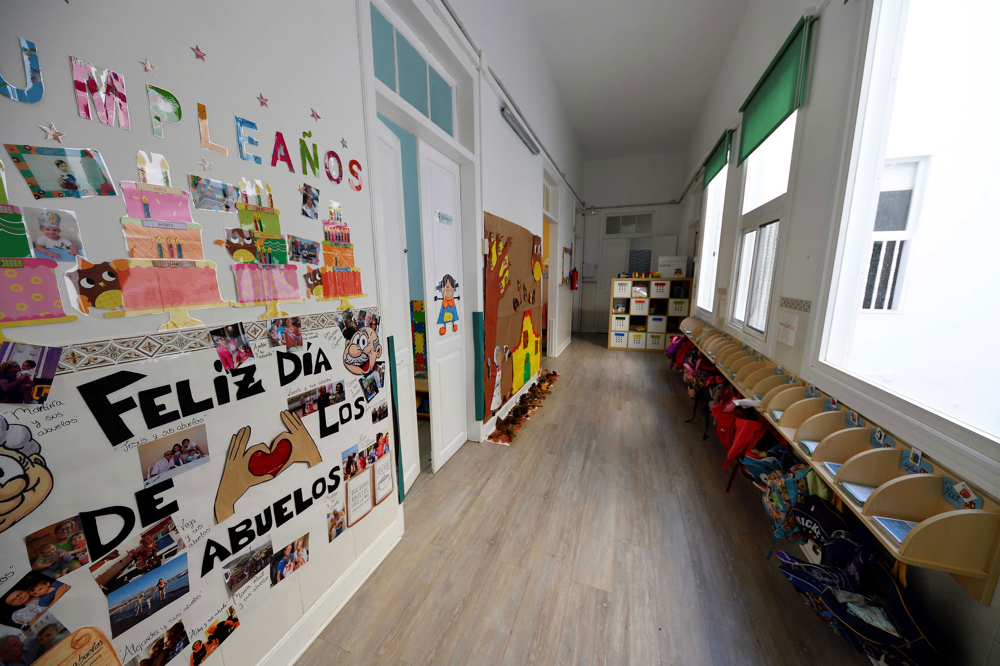
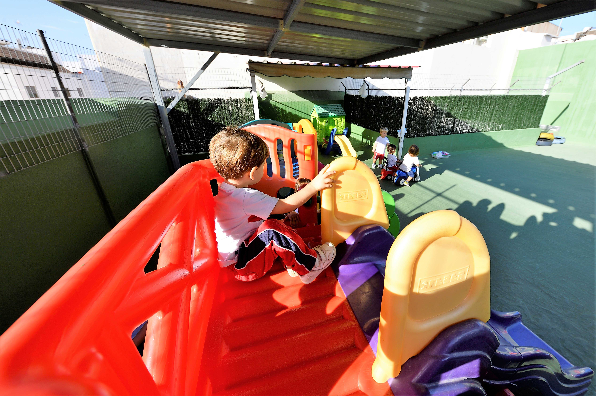
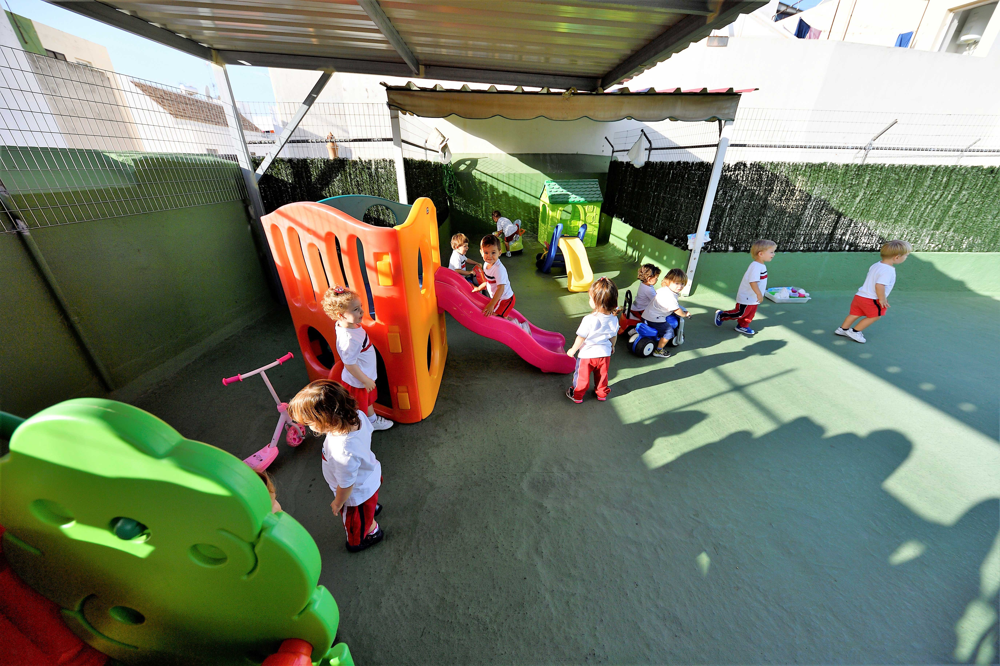
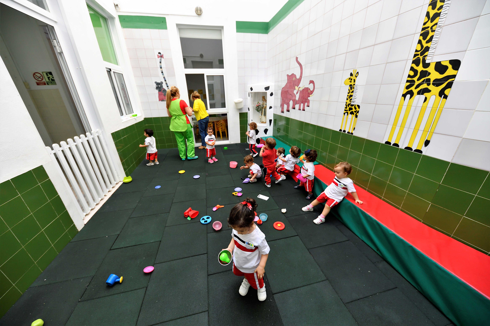
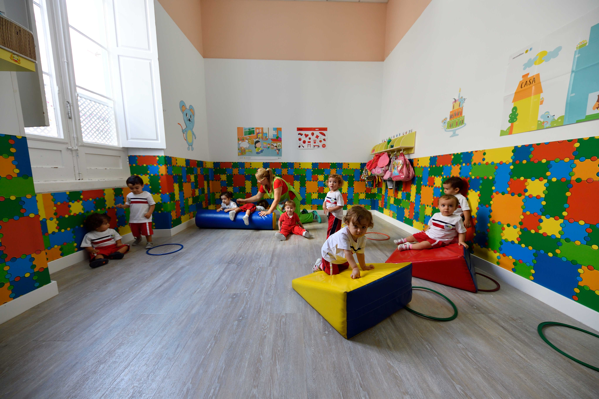
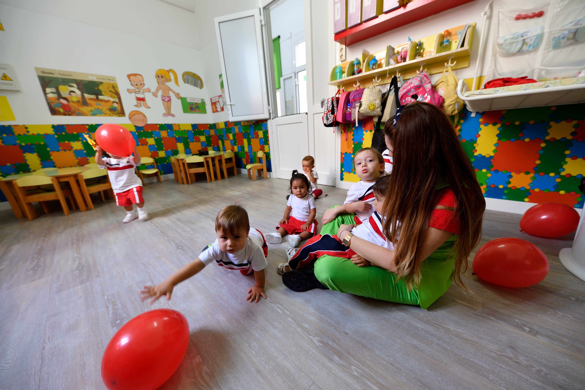

En nuestro centro, nos enfocamos en la orientación integral de los niños y niñas en su etapa más temprana. Nuestro equipo especializado trabaja con esmero para guiar a los pequeños en su desarrollo cognitivo, emocional y social.
Creemos en la importancia de acompañar a cada niño y niña en su proceso de descubrimiento personal, ofreciéndoles herramientas para explorar el mundo que los rodea, fomentando su curiosidad natural y construyendo una base sólida para su futuro aprendizaje.A través de juegos didácticos, actividades en grupo y apoyo individual, nos aseguramos de que cada pequeño reciba la atención y estímulo que necesita para crecer de manera sana y feliz.
Nuestro centro se enorgullece de contar con un equipo de profesionales comprometidos con el bienestar y desarrollo de cada niño y niña. Nos aseguramos de que cada miembro de nuestro equipo aporte su experiencia y pasión para crear un entorno seguro y estimulante.
Laura Gómez - Con más de 10 años de experiencia en educación infantil, Laura se especializa en el aprendizaje a través del juego, ayudando a los niños a desarrollar habilidades motoras y sociales.
Carlos Ruiz - Psicopedagogo dedicado, Carlos acompaña a los pequeños en su desarrollo emocional, enseñándoles a gestionar sus emociones y a relacionarse con sus compañeros de manera positiva.
María Sánchez - Profesora creativa y enérgica, María utiliza técnicas innovadoras para enseñar a través del arte y la música, fomentando la expresión y la creatividad desde edades tempranas.
Ana Fernández - Especialista en ciencias, Ana introduce a los niños en el fascinante mundo de la naturaleza y los experimentos, despertando en ellos la curiosidad científica.
Isabel López (Logopeda) - Nuestra logopeda Isabel trabaja de manera personalizada con aquellos niños que necesitan apoyo en su desarrollo del habla y lenguaje, garantizando que cada uno de ellos se comunique de manera eficaz y segura.
Sabemos que cada familia tiene necesidades distintas, por eso ofrecemos una variedad de opciones y descuentos que se adaptan a ti: